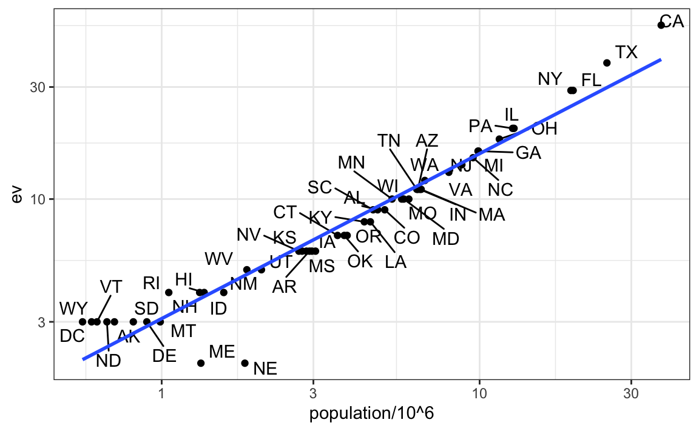

13 Joining tables
The information we need for a given analysis may not be just in one table. For example, when forecasting elections we used the function left_join to combine the information from two tables. Here we use a simpler example to illustrate the general challenge of combining tables.
Suppose we want to explore the relationship between population size for US states and electoral votes. We have the population size in this table:
and electoral votes in this one:
head(results_us_election_2016)
## state electoral_votes clinton trump others
## 1 California 55 61.7 31.6 6.7
## 2 Texas 38 43.2 52.2 4.5
## 3 Florida 29 47.8 49.0 3.2
## 4 New York 29 59.0 36.5 4.5
## 5 Illinois 20 55.8 38.8 5.4
## 6 Pennsylvania 20 47.9 48.6 3.6Just concatenating these two tables together will not work since the order of the states is not the same.
identical(results_us_election_2016$state, murders$state)
## [1] FALSEThe join functions, described below, are designed to handle this challenge.
13.1 Joins
The join functions in the dplyr package make sure that the tables are combined so that matching rows are together. If you know SQL, you will see that the approach and syntax is very similar. The general idea is that one needs to identify one or more columns that will serve to match the two tables. Then a new table with the combined information is returned. Notice what happens if we join the two tables above by state using left_join (we will remove the others column and rename electoral_votes so that the tables fit on the page):
tab <- left_join(murders, results_us_election_2016, by = "state") |>
select(-others) |> rename(ev = electoral_votes)
head(tab)
## state abb region population total ev clinton trump
## 1 Alabama AL South 4779736 135 9 34.4 62.1
## 2 Alaska AK West 710231 19 3 36.6 51.3
## 3 Arizona AZ West 6392017 232 11 45.1 48.7
## 4 Arkansas AR South 2915918 93 6 33.7 60.6
## 5 California CA West 37253956 1257 55 61.7 31.6
## 6 Colorado CO West 5029196 65 9 48.2 43.3The data has been successfully joined and we can now, for example, make a plot to explore the relationship:
library(ggrepel)
tab |> ggplot(aes(population/10^6, ev, label = abb)) +
geom_point() +
geom_text_repel() +
scale_x_continuous(trans = "log2") +
scale_y_continuous(trans = "log2") +
geom_smooth(method = "lm", se = FALSE)
We see the relationship is close to linear with about 2 electoral votes for every million persons, but with very small states getting higher ratios.
In practice, it is not always the case that each row in one table has a matching row in the other. For this reason, we have several versions of join. To illustrate this challenge, we will take subsets of the tables above. We create the tables tab1 and tab2 so that they have some states in common but not all:
tab_1 <- slice(murders, 1:6) |> select(state, population)
tab_1
## state population
## 1 Alabama 4779736
## 2 Alaska 710231
## 3 Arizona 6392017
## 4 Arkansas 2915918
## 5 California 37253956
## 6 Colorado 5029196
tab_2 <- results_us_election_2016 |>
filter(state%in%c("Alabama", "Alaska", "Arizona",
"California", "Connecticut", "Delaware")) |>
select(state, electoral_votes) |> rename(ev = electoral_votes)
tab_2
## state ev
## 1 California 55
## 2 Arizona 11
## 3 Alabama 9
## 4 Connecticut 7
## 5 Alaska 3
## 6 Delaware 3We will use these two tables as examples in the next sections.
13.1.1 Left join
Suppose we want a table like tab_1, but adding electoral votes to whatever states we have available. For this, we use left_join with tab_1 as the first argument. We specify which column to use to match with the by argument.
left_join(tab_1, tab_2, by = "state")
## state population ev
## 1 Alabama 4779736 9
## 2 Alaska 710231 3
## 3 Arizona 6392017 11
## 4 Arkansas 2915918 NA
## 5 California 37253956 55
## 6 Colorado 5029196 NANote that NAs are added to the two states not appearing in tab_2. Also, notice that this function, as well as all the other joins, can receive the first arguments through the pipe:
tab_1 |> left_join(tab_2, by = "state")13.1.2 Right join
If instead of a table with the same rows as first table, we want one with the same rows as second table, we can use right_join:
tab_1 |> right_join(tab_2, by = "state")
## state population ev
## 1 Alabama 4779736 9
## 2 Alaska 710231 3
## 3 Arizona 6392017 11
## 4 California 37253956 55
## 5 Connecticut NA 7
## 6 Delaware NA 3Now the NAs are in the column coming from tab_1.
13.1.3 Inner join
If we want to keep only the rows that have information in both tables, we use inner_join. You can think of this as an intersection:
inner_join(tab_1, tab_2, by = "state")
## state population ev
## 1 Alabama 4779736 9
## 2 Alaska 710231 3
## 3 Arizona 6392017 11
## 4 California 37253956 5513.1.4 Full join
If we want to keep all the rows and fill the missing parts with NAs, we can use full_join. You can think of this as a union:
full_join(tab_1, tab_2, by = "state")
## state population ev
## 1 Alabama 4779736 9
## 2 Alaska 710231 3
## 3 Arizona 6392017 11
## 4 Arkansas 2915918 NA
## 5 California 37253956 55
## 6 Colorado 5029196 NA
## 7 Connecticut NA 7
## 8 Delaware NA 313.1.5 Semi join
The semi_join function lets us keep the part of first table for which we have information in the second. It does not add the columns of the second:
semi_join(tab_1, tab_2, by = "state")
## state population
## 1 Alabama 4779736
## 2 Alaska 710231
## 3 Arizona 6392017
## 4 California 3725395613.1.6 Anti join
The function anti_join is the opposite of semi_join. It keeps the elements of the first table for which there is no information in the second:
anti_join(tab_1, tab_2, by = "state")
## state population
## 1 Arkansas 2915918
## 2 Colorado 5029196The following diagram summarizes the above joins:

(Image courtesy of RStudio1. CC-BY-4.0 license2. Cropped from original.)
13.2 Binding
Although we have yet to use it in this book, another common way in which datasets are combined is by binding them. Unlike the join function, the binding functions do not try to match by a variable, but instead simply combine datasets. If the datasets don’t match by the appropriate dimensions, one obtains an error.
13.2.1 Binding columns
The dplyr function bind_cols binds two objects by making them columns in a tibble. For example, we quickly want to make a data frame consisting of numbers we can use.
bind_cols(a = 1:3, b = 4:6)
## # A tibble: 3 × 2
## a b
## <int> <int>
## 1 1 4
## 2 2 5
## 3 3 6This function requires that we assign names to the columns. Here we chose a and b.
Note that there is an R-base function cbind with the exact same functionality. An important difference is that cbind can create different types of objects, while bind_cols always produces a data frame.
bind_cols can also bind two different data frames. For example, here we break up the tab data frame and then bind them back together:
tab_1 <- tab[, 1:3]
tab_2 <- tab[, 4:6]
tab_3 <- tab[, 7:8]
new_tab <- bind_cols(tab_1, tab_2, tab_3)
head(new_tab)
## state abb region population total ev clinton trump
## 1 Alabama AL South 4779736 135 9 34.4 62.1
## 2 Alaska AK West 710231 19 3 36.6 51.3
## 3 Arizona AZ West 6392017 232 11 45.1 48.7
## 4 Arkansas AR South 2915918 93 6 33.7 60.6
## 5 California CA West 37253956 1257 55 61.7 31.6
## 6 Colorado CO West 5029196 65 9 48.2 43.313.2.2 Binding by rows
The bind_rows function is similar to bind_cols, but binds rows instead of columns:
tab_1 <- tab[1:2,]
tab_2 <- tab[3:4,]
bind_rows(tab_1, tab_2)
## state abb region population total ev clinton trump
## 1 Alabama AL South 4779736 135 9 34.4 62.1
## 2 Alaska AK West 710231 19 3 36.6 51.3
## 3 Arizona AZ West 6392017 232 11 45.1 48.7
## 4 Arkansas AR South 2915918 93 6 33.7 60.6This is based on an R-base function rbind.
13.3 Set operators
Another set of commands useful for combining datasets are the set operators. When applied to vectors, these behave as their names suggest. Examples are intersect, union, setdiff, and setequal. However, if the tidyverse, or more specifically dplyr, is loaded, these functions can be used on data frames as opposed to just on vectors.
13.3.1 Intersect
You can take intersections of vectors of any type, such as numeric:
intersect(1:10, 6:15)
## [1] 6 7 8 9 10or characters:
The dplyr package includes an intersect function that can be applied to tables with the same column names. This function returns the rows in common between two tables. To make sure we use the dplyr version of intersect rather than the base package version, we can use dplyr::intersect like this:
tab_1 <- tab[1:5,]
tab_2 <- tab[3:7,]
dplyr::intersect(tab_1, tab_2)
## state abb region population total ev clinton trump
## 1 Arizona AZ West 6392017 232 11 45.1 48.7
## 2 Arkansas AR South 2915918 93 6 33.7 60.6
## 3 California CA West 37253956 1257 55 61.7 31.613.3.2 Union
Similarly union takes the union of vectors. For example:
The dplyr package includes a version of union that combines all the rows of two tables with the same column names.
tab_1 <- tab[1:5,]
tab_2 <- tab[3:7,]
dplyr::union(tab_1, tab_2)
## state abb region population total ev clinton trump
## 1 Alabama AL South 4779736 135 9 34.4 62.1
## 2 Alaska AK West 710231 19 3 36.6 51.3
## 3 Arizona AZ West 6392017 232 11 45.1 48.7
## 4 Arkansas AR South 2915918 93 6 33.7 60.6
## 5 California CA West 37253956 1257 55 61.7 31.6
## 6 Colorado CO West 5029196 65 9 48.2 43.3
## 7 Connecticut CT Northeast 3574097 97 7 54.6 40.9
13.3.3 setdiff
The set difference between a first and second argument can be obtained with setdiff. Unlike intersect and union, this function is not symmetric:
As with the functions shown above, dplyr has a version for data frames:
tab_1 <- tab[1:5,]
tab_2 <- tab[3:7,]
dplyr::setdiff(tab_1, tab_2)
## state abb region population total ev clinton trump
## 1 Alabama AL South 4779736 135 9 34.4 62.1
## 2 Alaska AK West 710231 19 3 36.6 51.3
13.3.4 setequal
Finally, the function setequal tells us if two sets are the same, regardless of order. So notice that:
setequal(1:5, 1:6)
## [1] FALSEbut:
setequal(1:5, 5:1)
## [1] TRUEWhen applied to data frames that are not equal, regardless of order, the dplyr version provides a useful message letting us know how the sets are different:
dplyr::setequal(tab_1, tab_2)
## [1] FALSE13.4 Exercises
1. Install and load the Lahman library. This database includes data related to baseball teams. It includes summary statistics about how the players performed on offense and defense for several years. It also includes personal information about the players.
The Batting data frame contains the offensive statistics for all players for many years. You can see, for example, the top 10 hitters by running this code:
But who are these players? We see an ID, but not the names. The player names are in this table
Master |> as_tibble()We can see column names nameFirst and nameLast. Use the left_join function to create a table of the top home run hitters. The table should have playerID, first name, last name, and number of home runs (HR). Rewrite the object top with this new table.
2. Now use the Salaries data frame to add each player’s salary to the table you created in exercise 1. Note that salaries are different every year so make sure to filter for the year 2016, then use right_join. This time show first name, last name, team, HR, and salary.
3. In a previous exercise, we created a tidy version of the co2 dataset:
co2_wide <- data.frame(matrix(co2, ncol = 12, byrow = TRUE)) |>
setNames(1:12) |>
mutate(year = 1959:1997) |>
pivot_longer(-year, names_to = "month", values_to = "co2") |>
mutate(month = as.numeric(month))We want to see if the monthly trend is changing so we are going to remove the year effects and then plot the results. We will first compute the year averages. Use the group_by and summarize to compute the average co2 for each year. Save in an object called yearly_avg.
4. Now use the left_join function to add the yearly average to the co2_wide dataset. Then compute the residuals: observed co2 measure - yearly average.
5. Make a plot of the seasonal trends by year but only after removing the year effect.